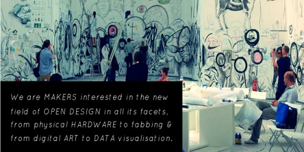
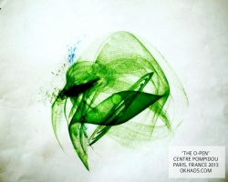
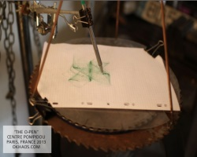

也紀念我們永遠的朋友 李士傑先生（Shih-Chieh Ilya Li）。
開放設計的全新樣貌 由我們共同想像
◎ 本文原載台灣創用 CC 計畫，原文章連結按此。
「設計是設計一個設計來創造另一個設計 (design is to design a design to produce a design)」，Open Design + hardware 網站中用了這麼一段常用的引述，卻深深的打中了設計師們的心。
你認為的設計樣貌是什麼呢？有沒有一種可能性可以讓我們再次定義所謂的已完成的設計呢？
Open Design + hardware 是由三位致力於推廣「開放設計」概念的設計師 - Kat Braybrooke、Massimo Menichinelli 及 Primavera de Filippi 聯合串聯而成的組織。
這是一個高聲疾呼開放設計重要性的組織，認為閉門造車的設計已經是過時的創作習慣了，設計是社會集體文化造就的傑作，設計是讓我們重新檢視物件的可能，透過設計我們欣賞並學習，設計何其美好，怎該獨自佔有？這是一個高聲疾呼開放設計重要性的組織，認為閉門造車的設計已經是過時的創作習慣了，設計是社會集體文化造就的傑作，設計是讓我們重新檢視物件的可能，透過設計我們欣賞並學習，設計何其美好，怎該獨自佔有？

西元 2000 年，Open Design 的概念首先被揭示，於今已有超過十年的歷史，而實際的行動卻是於近幾年才被漸次發展，Open Design + hardware 特別注意到了開放設計的重要性，認為許多設計產品仍舊有著待設計發展的空間，然而，現行對於開放設計的定義卻是相當模糊，對此甚感可惜。
因此，Open Design + hardware 首要計畫為「定義開放設計」，以理論及實踐的發展作為參考，鼓勵設計師們加入組織中的公眾討論及分享平台，透過舉辦開放設計定義工作坊邀請多方的設計師夥伴們加入討論，藉由不斷的對話及實作，期望共同定義出開放設計的明確概念及應用，更邀請超過 150 位設計師加入 GOOGLE+ 作為即時的交流互動平台，在平台中可以展示個人成果亦可同時獲得來自他人的寶貴意見，靈感激烈碰撞的時刻，美好的設計將油然而生。
於開放設計的應用上，則是藉由提倡「物件再製 - Hardware Remix」，將已被納入公眾領域的一首詩、一段旋律、一部劇作......等，提倡使用公眾領域作品，網站採取創用 CC「姓名標示─相同方式分享」授權，取自作品想法或做法揉合新的創意發想，創造出符合集體文化記憶的物件，與時俱進的全新設計將使原始物件再次獲得嶄新活力。

(Public Domain Work)

(Remix Example:O-PEN)
圖／授權資訊：Khaos，「姓名標示─相同方式分享」
一個產品，將來自於數個設計師的合力創作，創意及智慧在生產的過程中重複堆疊，該是如此珍貴啊！
開放設計的魅力令這群設計師們深深著迷，他們是一群夢想家，從自身出發並付諸行動的夢想家，如果你也認同開放設計的發想，開放設計的樣貌將由我們共同想像，一起加入吧！
註 : Engage by design 同樣是促進設計團體持續交流、分享的網站，而且他們還將設計方面的專家對談錄影分享出來，讓更多人可以加入設計理念的對話。採取創用 CC「姓名標示─非商業性─禁止改作」授權方式。
專欄總覽


E-Mail：contact@openfoundry.org Address：台北市南港區研究院路2段128號 中央研究院資訊科學研究所 . 隱私權條款. 使用條款